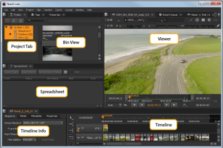
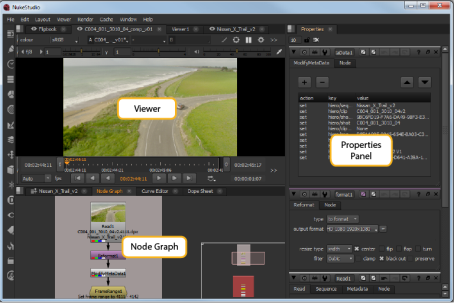
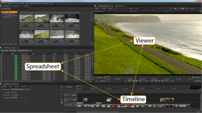
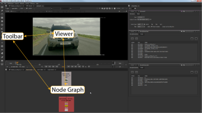
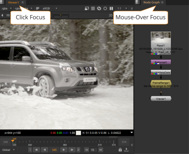

The Nuke Studio Timeline environment allows you to conform, create Nuke Comps, add soft effects, perform timeline-based editing, export your project, and view and edit metadata and properties.

|
Project Tab |
You can manage all aspects of your projects and bins in the Project tab. |
|
Menu Bar |
Use the Menu bar to access Nuke Studio's dropdown menus. |
|
Bin View |
The bin displays the contents of any selected Project tab. |
|
Viewer |
You can display and review your media in the Viewer. |
|
Timeline Info |
The timeline info displays the current timeline’s sequence, media, and metadata information. |
|
Editing Tools |
There is a comprehensive set of editing tools provided in Nuke Studio. See Timeline Editing Tools for more information. |
|
Spreadsheet Tab |
Use the Spreadsheet tab to display the contents of the timeline in spreadsheet form. Note that the spreadsheet and timeline are linked, mirroring any selections made. |
|
Timeline |
The timeline displays the current track, including all clip instances and any effects that have been added. |
You can use the Compositing environment to perform node-based compositing with a choice of different VFX tools, manage color grading, review your script, and render out your script.
By default, there is a Node Graph panel in the lower-left corner, a Viewer panel in the top-left corner, and a Properties panel on the right.

|
Node Graph |
The Node Graph is where you add nodes and build your node tree. |
|
Properties Panel |
When you add a node to the Node Graph, its properties appear in the Properties panel on the right. |
|
Viewer |
To check the result, you can view the output in a Viewer. |
In Nuke Studio, some panels are linked together so that the linked panel tabs are automatically displayed at the front of a panel, when one of linked group is selected. This makes it quick and easy to switch between working in the Timeline and Compositing environments.
The Timeline linked group includes the spreadsheet, the Timeline environment Viewer, and the timeline. The Compositing linked group includes the Node Graph, the Compositing environment Viewer, and the node Toolbar.
|
 |
 |
| Timeline Linked Group | Compositing Linked Group |
For example, when you are in the Compositing environment and you select the a spreadsheet from the Properties content menu. The spread sheet appears as a new tab in the Properties pane, and automatically opens the timeline, and the timeline Viewer.
NOTE: If more than one tab in the linked group is in the same pane, the most recently viewed tab is displayed at the front of the pane.
Shared panels take precedence over unshared panels. Shared panels include Curve Editor, Dope Sheet, Pixel Analyzer, Scopes, and Progress bars. The Properties pane and Script Editor are also shared panels, but differ slightly in that they show workspace-specific content. For example, the Properties panels shows soft effect keyframes and Node Graph keyframes depending on the currently selected workspace.
Nuke Studio deals with panel focus in two ways: click focus and mouse-over focus. Click focus defines the main panel where keyboard events are registered and mouse-over focus allows you to temporarily override that focus. If the mouse-over focus is centered on a panel that doesn't recognize a particular keyboard event, the event falls back to the click focus panel.
A good example of click focus versus mouse-over focus is between Viewers and the Node Graph:
• If a Compositing Viewer has click focus and you press B, only the blue color channel is displayed in the Viewer. If the mouse-over focus resides on the Node Graph and you press B, the click focus is overridden and a Blur node is added to the Node Graph.
• If a Compositing Viewer has click focus and you press , (comma), the gain is reduced in the Viewer. If the mouse-over focus resides on the Node Graph and you press , (comma), the gain is still reduced in the Viewer because the Node Graph has no , (comma) equivalent keyboard shortcut.
Some areas of the interface retain focus no matter where the mouse-over focus resides, such as the message control in the Text node's Properties panel and the Filter field in the Project panel.
Click focus is shown in the interface with a bright orange highlight in the panel name and mouse-over focus is shown as a muted orange highlight.

|
|